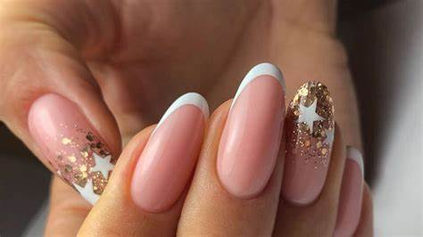

Recuerda cuidar tus cutículas y usar aceites hidratantes.
Tipos de Manicure 💅
Refleja tu estilo en tus uñas:. Existen diversos tipos de manicure como:
- Manicure tradicional: el básico que nunca falla.
- Gelish: acabado brillante y duradero.
- Acrílico: ideal para uñas largas y decoradas.